Modul 6
Bilddemo - lazy loading och srcset
En separat demosida där det syns vilken bildfil webbläsaren använder och när bilder laddas.
Responsiva bildkällor med srcset
Den här bilden finns i tre versioner. De har olika färg och text: 400w, 800w och 1200w. Webbläsaren väljer en av dem utifrån bildens visade bredd och skärmens pixeltäthet.
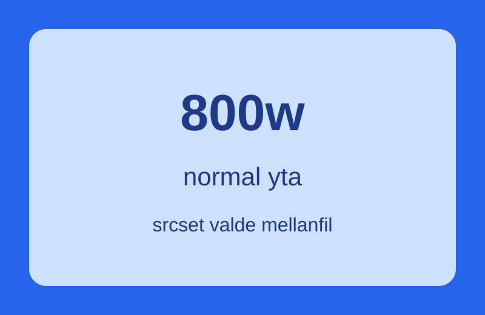
720px
sizes: 720px
currentSrc: laddar...
Skärmens pixeltäthet: laddar...
<img
src="demo-srcset-800.svg"
srcset="demo-srcset-400.svg 400w,
demo-srcset-800.svg 800w,
demo-srcset-1200.svg 1200w"
sizes="720px"
alt="Testbild">Lazy loading
Bilden direkt här nedanför laddas normalt direkt. Därefter kommer tio bilder under varandra med loading="lazy". Öppna gärna Network-panelen i utvecklarverktygen, ladda om sidan och scrolla långsamt nedåt. Då blir det tydligt att bilder längre ner på sidan inte behöver hämtas direkt. Om du har snabb uppkoppling kan bilderna ändå laddas så snabbt att du knappt hinner se det, men Network-panelen visar fortfarande när varje bild hämtas.
Bild som laddas direkt
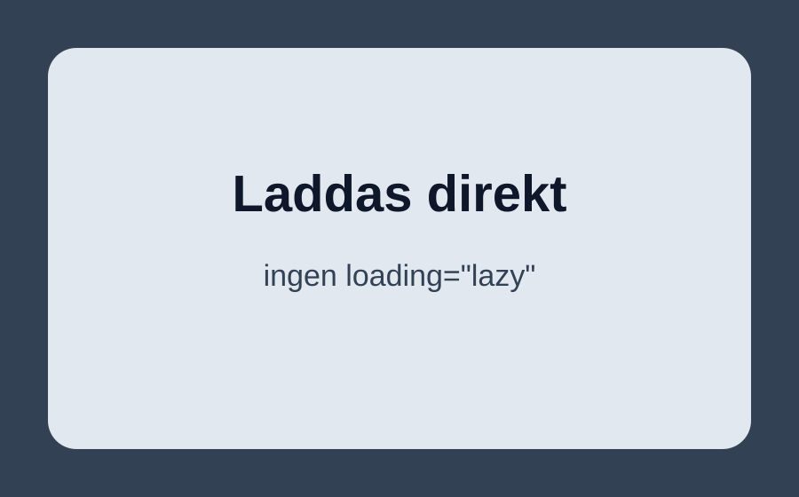
- Väntar på bildladdningar...
Scrolla vidare. Nu börjar serien med tio lazy-bilder.
Lazy loading bild 1 av 10
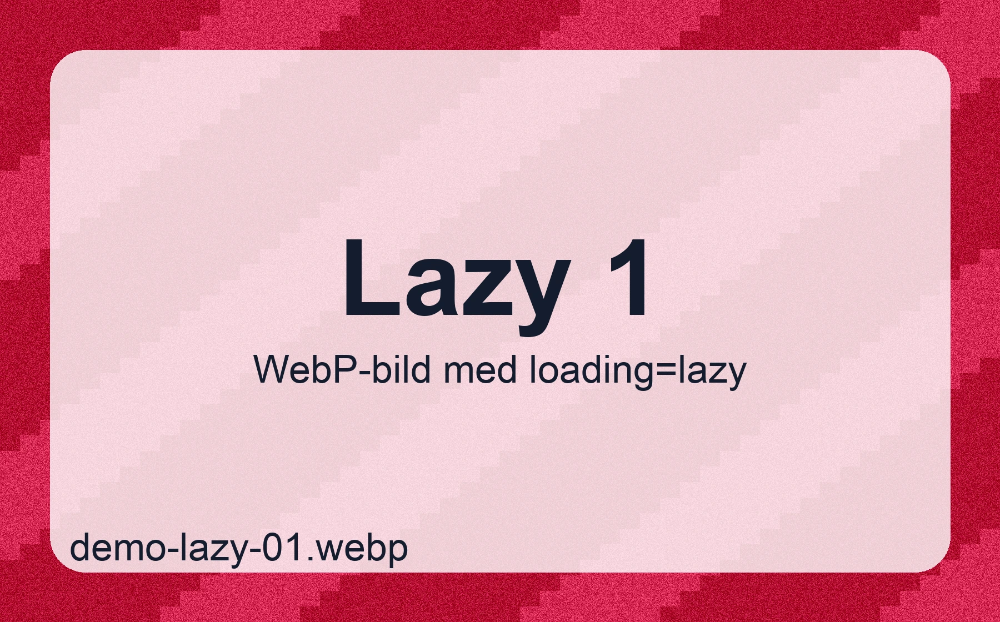
Fortsätt scrolla till bild 2.
Lazy loading bild 2 av 10
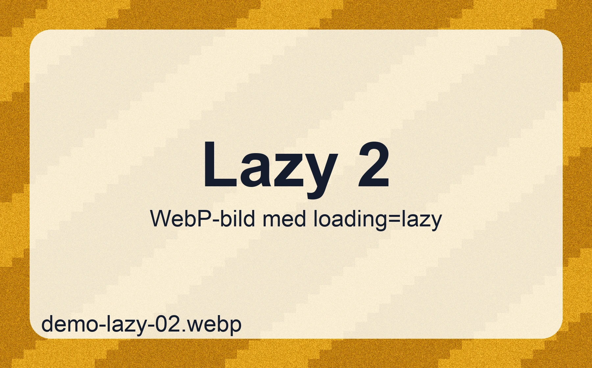
Fortsätt scrolla till bild 3.
Lazy loading bild 3 av 10
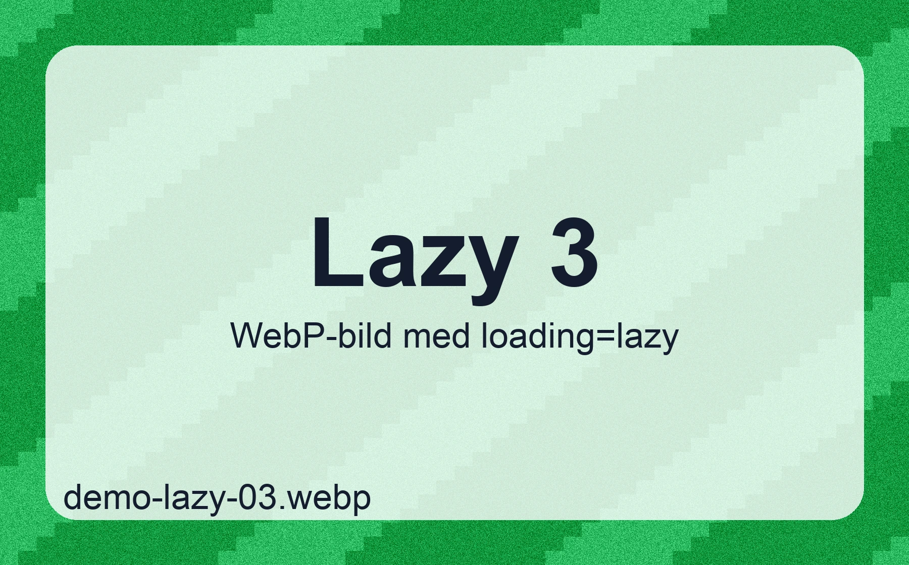
Fortsätt scrolla till bild 4.
Lazy loading bild 4 av 10
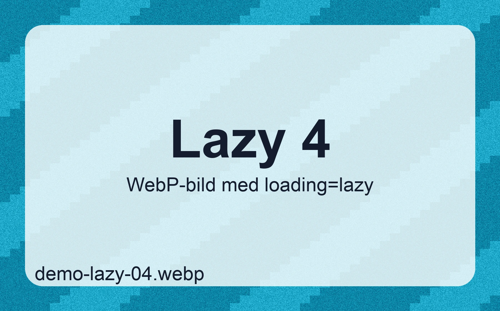
Fortsätt scrolla till bild 5.
Lazy loading bild 5 av 10
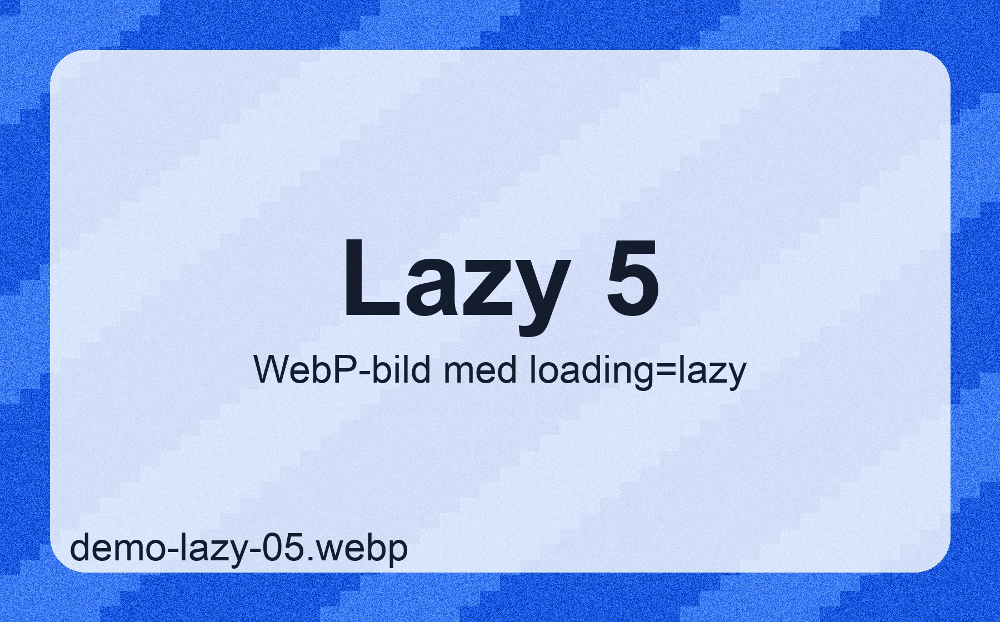
Fortsätt scrolla till bild 6.
Lazy loading bild 6 av 10
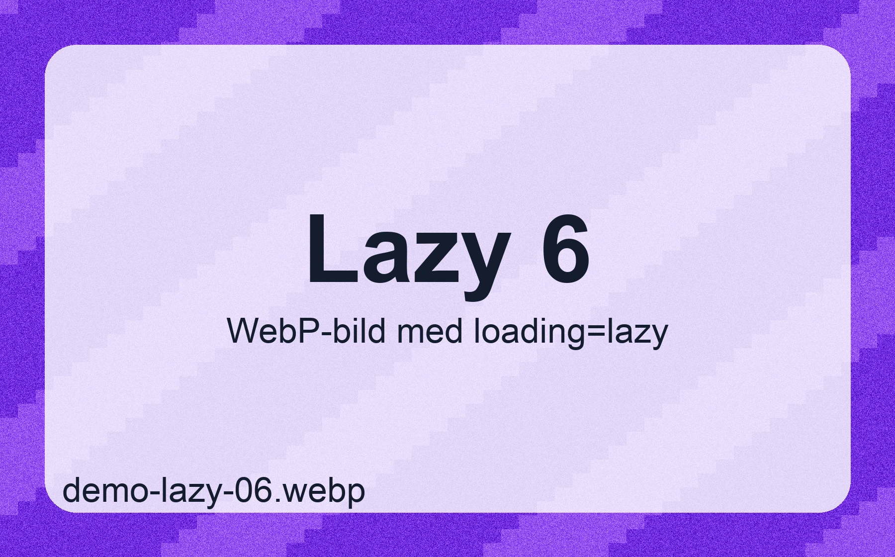
Fortsätt scrolla till bild 7.
Lazy loading bild 7 av 10
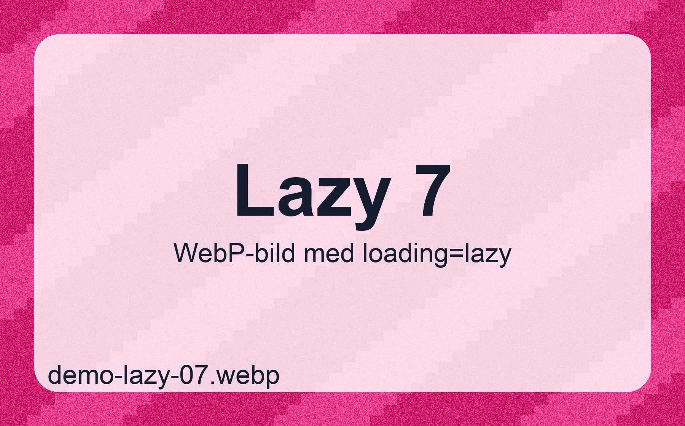
Fortsätt scrolla till bild 8.
Lazy loading bild 8 av 10
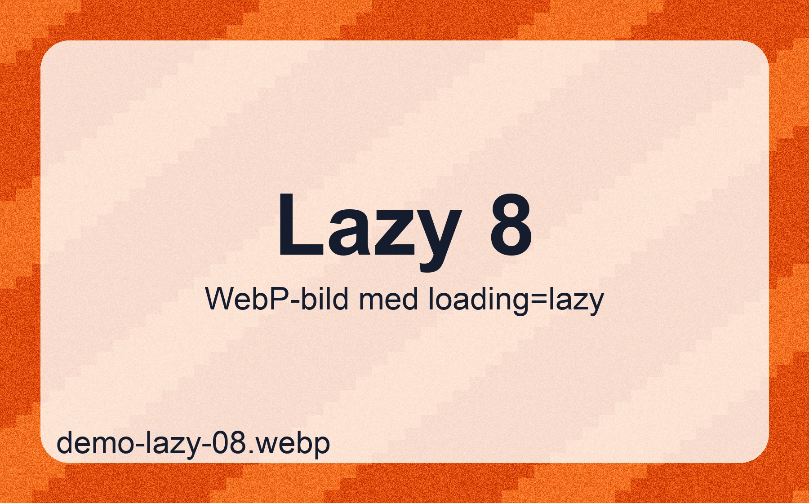
Fortsätt scrolla till bild 9.
Lazy loading bild 9 av 10
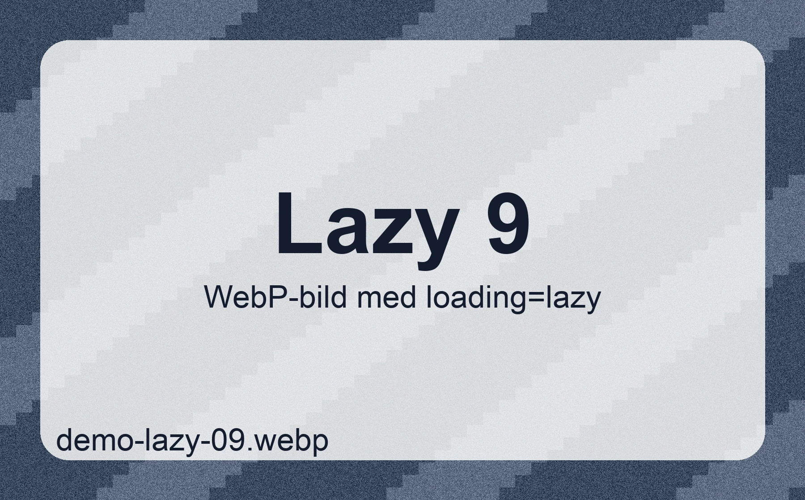
Fortsätt scrolla till bild 10.
Lazy loading bild 10 av 10
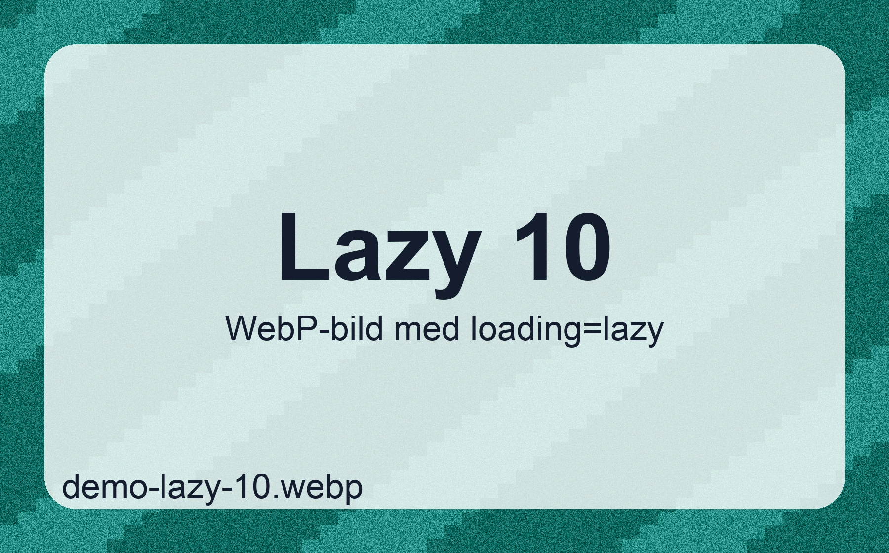
<img src="bild-direkt.svg" alt="...">
<img src="bild-langre-ner.webp" alt="..." loading="lazy">